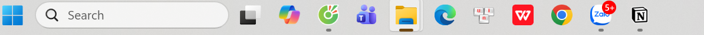
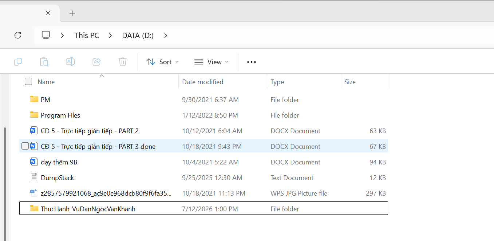
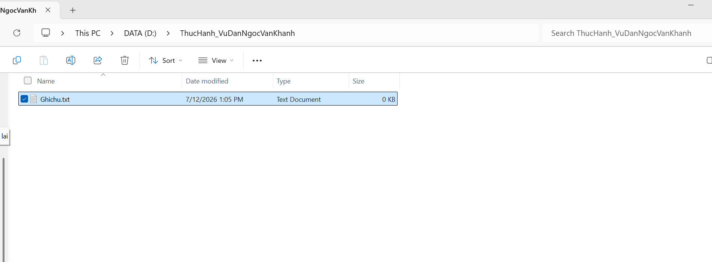
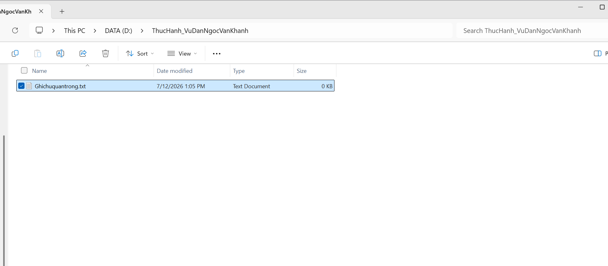
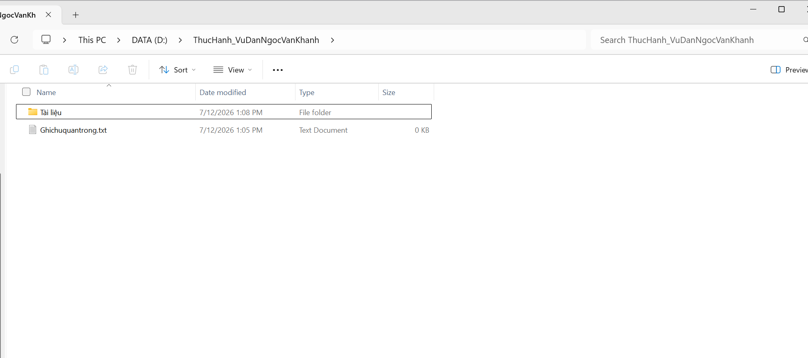
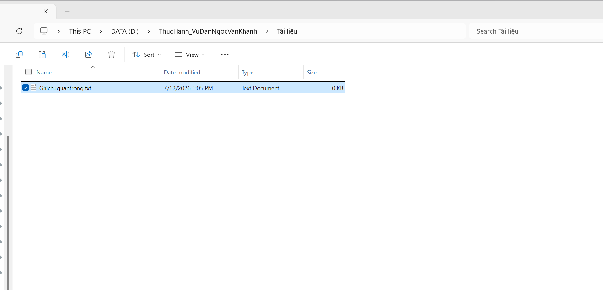
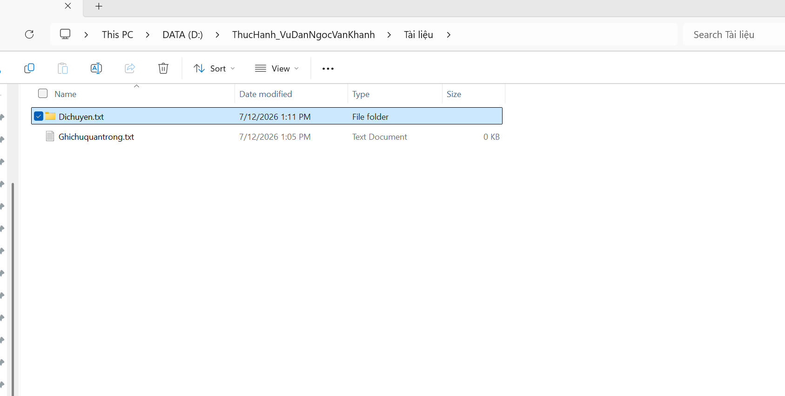
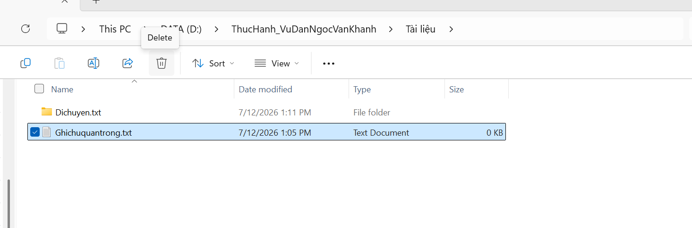
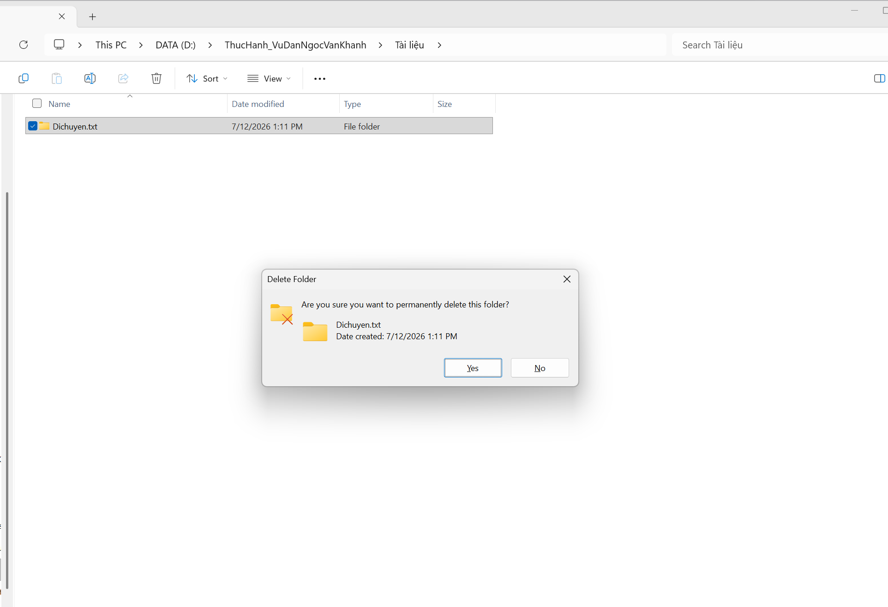
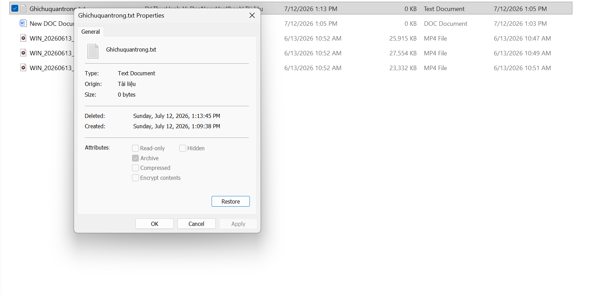

1, Mở file explorer

2, Tạo thư mục mới

3, Tạo tệp tin văn bản

4, Đổi tên tệp tin văn bản

5, Tạo thư mục con

6, Sao chép tệp tin

7, Di chuyển tệp tin

8, Xóa tệp tin

9, Xóa vĩnh viễn tệp tin

10, Khôi phục từ thùng rác
